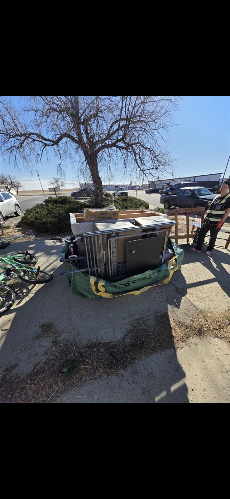

Donation
Furniture Donation Guide for Denver Metro Homeowners
Before any piece of furniture heads to a landfill, it's worth a quick check on whether it's actually donatable — a lot of what people assume is "too worn out" is exactly what a local donation center or nonprofit can still use. Here's what typically qualifies, what doesn't, and what happens either way.
What's typically accepted
Most donation centers look for the same basics: clean, structurally sound, and free of major stains, tears, odors, or pest issues. A couch with some cosmetic wear but no structural problems is usually fine. Dressers, tables, and chairs with all their original hardware and no water damage are typically welcome too.
What's usually not accepted
- Furniture with significant stains, tears, or a persistent odor (smoke, pet, mildew)
- Anything structurally broken — a cracked frame, a table with a missing leg
- Mattresses and box springs with stains or that are older than most donation centers' cutoff, which varies by organization
- Items under manufacturer recall

Drop-off vs. pickup
Smaller items are usually easiest to drop off directly. Larger pieces — sofas, dressers, bed frames — are where a pickup service, whether through a donation organization or through us as part of a larger cleanout, saves the most effort, since you're not trying to fit a couch in a hatchback.
When furniture isn't donatable
Not everything makes the donation cut, and that's fine — it doesn't mean it just goes straight to the landfill either. Wood and metal frames that aren't donatable get broken down so recyclable materials can be pulled out, and mattresses are recycled wherever a facility accepts the materials. What's genuinely left over goes last, not first.
How we handle it
On every furniture removal job, we sort as we load — anything still in good shape gets set aside for donation instead of getting mixed in with the rest. We're not formally partnered with any single charity or food bank; we work with a range of local donation centers and nonprofits depending on the item and who has capacity to take it.
What it costs
Furniture removal in the Lakewood area is priced the same way as everything else — by trailer space. A single piece or two usually lands at or near our $100 minimum, while a full room's worth runs higher. Text a few photos and we'll tell you the real number, and whether it's a good candidate for donation, before we ever show up, or book online to get on the schedule.
Common questions
Furniture donation FAQ
What condition does furniture need to be in to donate?
Clean, structurally sound, and free of major stains, tears, or odors — most donation centers can't accept furniture that needs repair or has significant wear, even if it's still functional.
Do donation centers pick up furniture for free?
Some local organizations offer free pickup for larger, donatable pieces, though availability and scheduling vary by organization and by what you're donating.
What happens to furniture that can't be donated?
Wood and metal frames are broken down where possible so recyclable materials can be pulled out, and mattresses are recycled wherever a facility accepts the materials. Whatever's left after that is disposed of last.
Can you separate donation-eligible pieces from the rest of a load?
Yes — we sort as we load, so anything still in good shape gets set aside for donation rather than mixed in with everything else.
Do you donate everything to one specific organization?
No — we're not formally partnered with any single charity or food bank. We work with a variety of local donation centers and nonprofits depending on what's being donated and who has capacity to take it at the time.
How much does furniture removal cost in Lakewood?
A single piece or two usually falls at or near our $100 minimum pickup, while a full room of furniture runs higher depending on how much trailer space it fills — see our pricing page for the complete breakdown.
Reclaim your space today
Call or text 303-990-1812 for a free estimate — let us haul your stress away.